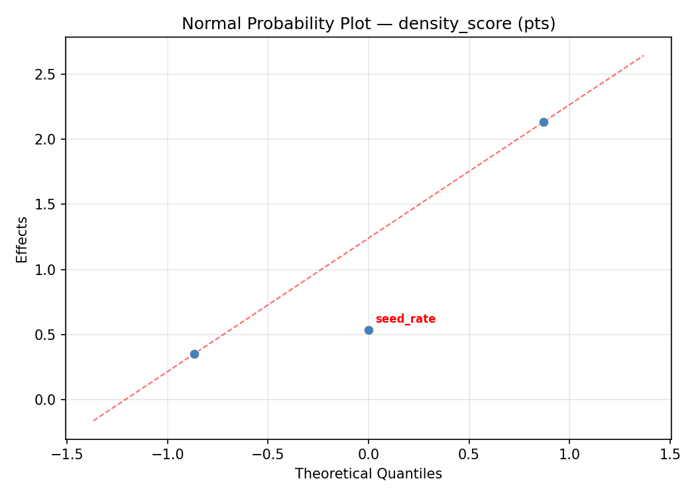
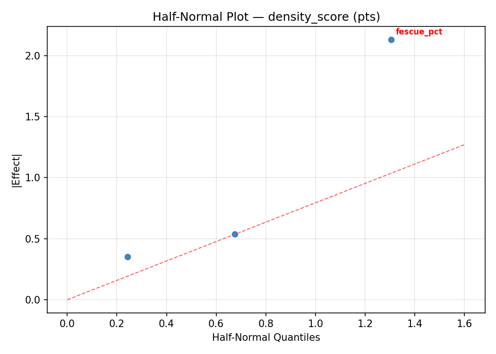
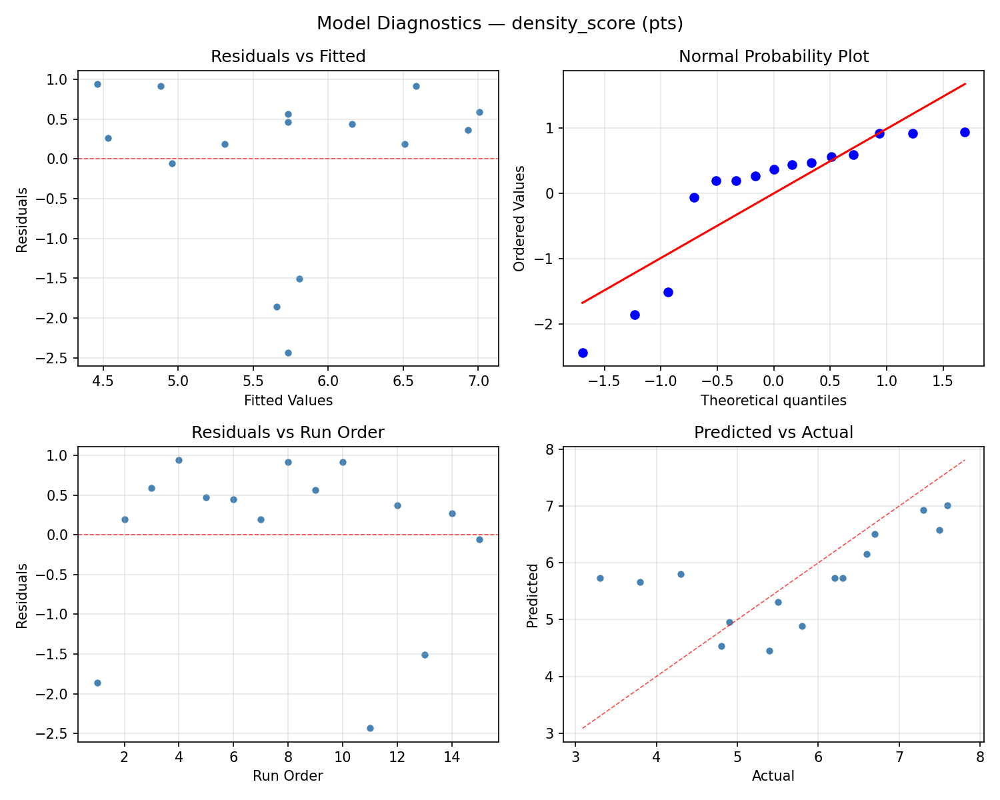
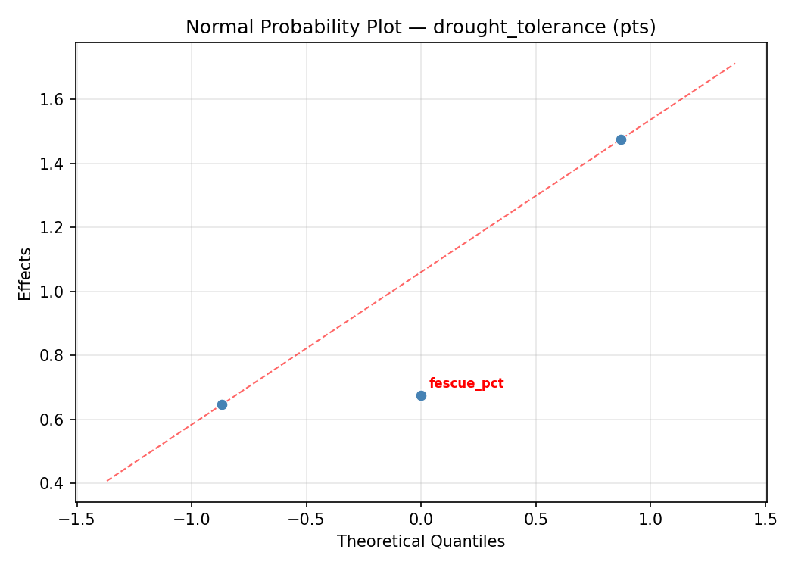
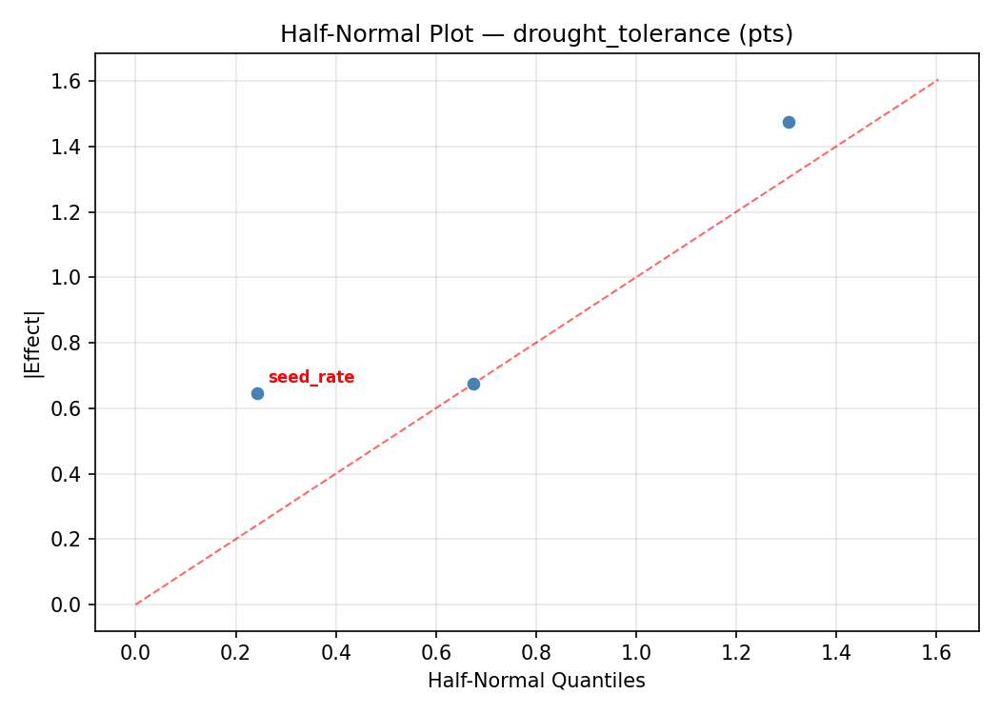
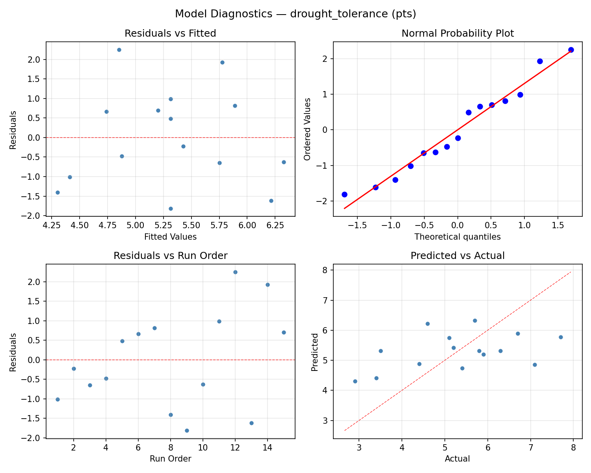

Summary
This experiment investigates lawn grass seed mix. Box-Behnken design to optimize turf density and drought tolerance by tuning perennial ryegrass ratio, fescue ratio, and seeding rate.
The design varies 3 factors: ryegrass pct (%), ranging from 20 to 60, fescue pct (%), ranging from 20 to 60, and seed rate (g/m2), ranging from 30 to 80. The goal is to optimize 2 responses: density score (pts) (maximize) and drought tolerance (pts) (maximize). Fixed conditions held constant across all runs include remaining bluegrass pct = balance, mowing height mm = 50.
A Box-Behnken design was chosen because it efficiently fits quadratic models with 3 continuous factors while avoiding extreme corner combinations — requiring only 15 runs instead of the 8 needed for a full factorial at two levels.
Quadratic response surface models were fitted to capture potential curvature and factor interactions. The RSM contour plots below visualize how pairs of factors jointly affect each response.
Key Findings
For density score, the most influential factors were ryegrass pct (52.9%), fescue pct (24.2%), seed rate (22.9%). The best observed value was 7.6 (at ryegrass pct = 40, fescue pct = 40, seed rate = 55).
For drought tolerance, the most influential factors were seed rate (41.9%), fescue pct (40.2%), ryegrass pct (17.9%). The best observed value was 7.7 (at ryegrass pct = 60, fescue pct = 60, seed rate = 55).
Recommended Next Steps
- Run confirmation experiments at the predicted optimal settings to validate the model.
- Consider whether any fixed factors should be varied in a future study.
Experimental Setup
Factors
| Factor | Low | High | Unit |
|---|
ryegrass_pct | 20 | 60 | % |
fescue_pct | 20 | 60 | % |
seed_rate | 30 | 80 | g/m2 |
Fixed: remaining_bluegrass_pct = balance, mowing_height_mm = 50
Responses
| Response | Direction | Unit |
|---|
density_score | ↑ maximize | pts |
drought_tolerance | ↑ maximize | pts |
Configuration
{
"metadata": {
"name": "Lawn Grass Seed Mix",
"description": "Box-Behnken design to optimize turf density and drought tolerance by tuning perennial ryegrass ratio, fescue ratio, and seeding rate"
},
"factors": [
{
"name": "ryegrass_pct",
"levels": [
"20",
"60"
],
"type": "continuous",
"unit": "%"
},
{
"name": "fescue_pct",
"levels": [
"20",
"60"
],
"type": "continuous",
"unit": "%"
},
{
"name": "seed_rate",
"levels": [
"30",
"80"
],
"type": "continuous",
"unit": "g/m2"
}
],
"fixed_factors": {
"remaining_bluegrass_pct": "balance",
"mowing_height_mm": "50"
},
"responses": [
{
"name": "density_score",
"optimize": "maximize",
"unit": "pts"
},
{
"name": "drought_tolerance",
"optimize": "maximize",
"unit": "pts"
}
],
"settings": {
"operation": "box_behnken",
"test_script": "use_cases/101_lawn_grass_mix/sim.sh"
}
}
Experimental Matrix
The Box-Behnken Design produces 15 runs. Each row is one experiment with specific factor settings.
| Run | ryegrass_pct | fescue_pct | seed_rate |
|---|
| 1 | 40 | 20 | 30 |
| 2 | 40 | 40 | 55 |
| 3 | 60 | 40 | 80 |
| 4 | 60 | 40 | 30 |
| 5 | 40 | 40 | 55 |
| 6 | 40 | 40 | 55 |
| 7 | 20 | 40 | 80 |
| 8 | 60 | 20 | 55 |
| 9 | 40 | 20 | 80 |
| 10 | 60 | 60 | 55 |
| 11 | 20 | 40 | 30 |
| 12 | 40 | 60 | 80 |
| 13 | 20 | 20 | 55 |
| 14 | 20 | 60 | 55 |
| 15 | 40 | 60 | 30 |
Step-by-Step Workflow
1
Preview the design
$ python doe.py info --config use_cases/101_lawn_grass_mix/config.json
2
Generate the runner script
$ python doe.py generate --config use_cases/101_lawn_grass_mix/config.json \
--output use_cases/101_lawn_grass_mix/results/run.sh --seed 42
3
Execute the experiments
$ bash use_cases/101_lawn_grass_mix/results/run.sh
4
Analyze results
$ python doe.py analyze --config use_cases/101_lawn_grass_mix/config.json
5
Get optimization recommendations
$ python doe.py optimize --config use_cases/101_lawn_grass_mix/config.json
6
Multi-objective optimization
With 2 competing responses, use --multi to find the best compromise via Derringer–Suich desirability.
$ python doe.py optimize --config use_cases/101_lawn_grass_mix/config.json --multi
7
Generate the HTML report
$ python doe.py report --config use_cases/101_lawn_grass_mix/config.json \
--output use_cases/101_lawn_grass_mix/results/report.html
Features Exercised
| Feature | Value |
|---|
| Design type | box_behnken |
| Factor types | continuous (all 3) |
| Arg style | double-dash |
| Responses | 2 (density_score ↑, drought_tolerance ↑) |
| Total runs | 15 |
Analysis Results
Generated from actual experiment runs using the DOE Helper Tool.
Response: density_score
Top factors: ryegrass_pct (52.9%), fescue_pct (24.2%), seed_rate (22.9%).
ANOVA
| Source | DF | SS | MS | F | p-value |
|---|
| Source | DF | SS | MS | F | p-value |
| ryegrass_pct | 2 | 9.4115 | 4.7058 | 3.638 | 0.0752 |
| fescue_pct | 2 | 2.0087 | 1.0043 | 0.777 | 0.4918 |
| seed_rate | 2 | 1.7098 | 0.8549 | 0.661 | 0.5424 |
| Lack | of | Fit | 6 | 9.0167 | 1.5028 |
| Pure | Error | 2 | 2.5867 | | |
| Error | 8 | 11.6033 | 1.2933 | | |
| Total | 14 | 24.7333 | 1.7667 | | |
Pareto Chart

Main Effects Plot

Normal Probability Plot of Effects

Half-Normal Plot of Effects

Model Diagnostics

Response: drought_tolerance
Top factors: seed_rate (41.9%), fescue_pct (40.2%), ryegrass_pct (17.9%).
ANOVA
| Source | DF | SS | MS | F | p-value |
|---|
| Source | DF | SS | MS | F | p-value |
| ryegrass_pct | 2 | 1.2938 | 0.6469 | 4.043 | 0.0612 |
| fescue_pct | 2 | 5.4402 | 2.7201 | 17.001 | 0.0013 |
| seed_rate | 2 | 7.7052 | 3.8526 | 24.079 | 0.0004 |
| Lack | of | Fit | 6 | 11.9382 | 1.9897 |
| Pure | Error | 2 | 0.3200 | | |
| Error | 8 | 12.2582 | 0.1600 | | |
| Total | 14 | 26.6973 | 1.9070 | | |
Pareto Chart

Main Effects Plot

Normal Probability Plot of Effects

Half-Normal Plot of Effects

Model Diagnostics

Response Surface Plots
3D surfaces fitted with quadratic RSM. Red dots are observed data points.
density score fescue pct vs seed rate

density score ryegrass pct vs fescue pct

density score ryegrass pct vs seed rate

drought tolerance fescue pct vs seed rate

drought tolerance ryegrass pct vs fescue pct

drought tolerance ryegrass pct vs seed rate

Multi-Objective Optimization
When responses compete, Derringer–Suich desirability finds the best compromise.
Each response is scaled to a 0–1 desirability, then combined via a weighted geometric mean.
Overall Desirability
D = 0.9158
Per-Response Desirability
| Response | Weight | Desirability | Predicted | Dir |
|---|
density_score |
1.5 |
|
7.83 1.0000 7.83 pts |
↑ |
drought_tolerance |
1.5 |
|
7.09 0.8387 7.09 pts |
↑ |
Recommended Settings
| Factor | Value |
|---|
ryegrass_pct | 60 % |
fescue_pct | 60 % |
seed_rate | 30 g/m2 |
Source: from RSM model prediction
Trade-off Summary
Sacrifice = how much worse than single-objective best.
| Response | Predicted | Best Observed | Sacrifice |
|---|
drought_tolerance | 7.09 | 7.70 | +0.61 |
Top 3 Runs by Desirability
| Run | D | Factor Settings |
|---|
| #10 | 0.7331 | ryegrass_pct=60, fescue_pct=60, seed_rate=55 |
| #3 | 0.6642 | ryegrass_pct=40, fescue_pct=20, seed_rate=80 |
Model Quality
| Response | R² | Type |
|---|
drought_tolerance | 0.3242 | linear |
Full Multi-Objective Output
============================================================
MULTI-OBJECTIVE OPTIMIZATION
Method: Derringer-Suich Desirability Function
============================================================
Overall desirability: D = 0.9158
Response Weight Desirability Predicted Direction
---------------------------------------------------------------------
density_score 1.5 1.0000 7.83 pts ↑
drought_tolerance 1.5 0.8387 7.09 pts ↑
Recommended settings:
ryegrass_pct = 60 %
fescue_pct = 60 %
seed_rate = 30 g/m2
(from RSM model prediction)
Trade-off summary:
density_score: 7.83 (best observed: 7.60, sacrifice: -0.23)
drought_tolerance: 7.09 (best observed: 7.70, sacrifice: +0.61)
Model quality:
density_score: R² = 0.8225 (quadratic)
drought_tolerance: R² = 0.3242 (linear)
Top 3 observed runs by overall desirability:
1. Run #12 (D=0.8657): ryegrass_pct=40, fescue_pct=60, seed_rate=80
2. Run #10 (D=0.7331): ryegrass_pct=60, fescue_pct=60, seed_rate=55
3. Run #3 (D=0.6642): ryegrass_pct=40, fescue_pct=20, seed_rate=80
Full Analysis Output
=== Main Effects: density_score ===
Factor Effect Std Error % Contribution
--------------------------------------------------------------
ryegrass_pct 1.8464 0.3432 52.9%
fescue_pct 0.8429 0.3432 24.2%
seed_rate 0.8000 0.3432 22.9%
=== ANOVA Table: density_score ===
Source DF SS MS F p-value
-----------------------------------------------------------------------------
ryegrass_pct 2 9.4115 4.7058 3.638 0.0752
fescue_pct 2 2.0087 1.0043 0.777 0.4918
seed_rate 2 1.7098 0.8549 0.661 0.5424
Lack of Fit 6 9.0167 1.5028 1.162 0.5308
Pure Error 2 2.5867 1.2933
Error 8 11.6033 1.2933
Total 14 24.7333 1.7667
=== Summary Statistics: density_score ===
ryegrass_pct:
Level N Mean Std Min Max
------------------------------------------------------------
20 4 6.7750 0.9106 5.8000 7.6000
40 7 4.9286 0.9569 3.3000 6.3000
60 4 6.1000 1.5642 3.8000 7.3000
fescue_pct:
Level N Mean Std Min Max
------------------------------------------------------------
20 4 5.9250 1.0813 4.8000 7.3000
40 7 5.3571 1.4987 3.3000 7.5000
60 4 6.2000 1.3832 4.3000 7.6000
seed_rate:
Level N Mean Std Min Max
------------------------------------------------------------
30 4 5.9750 1.4127 4.3000 7.5000
55 7 5.9143 1.4916 3.3000 7.6000
80 4 5.1750 1.1087 3.8000 6.3000
=== Main Effects: drought_tolerance ===
Factor Effect Std Error % Contribution
--------------------------------------------------------------
seed_rate 1.6679 0.3566 41.9%
fescue_pct 1.6000 0.3566 40.2%
ryegrass_pct 0.7107 0.3566 17.9%
=== ANOVA Table: drought_tolerance ===
Source DF SS MS F p-value
-----------------------------------------------------------------------------
ryegrass_pct 2 1.2938 0.6469 4.043 0.0612
fescue_pct 2 5.4402 2.7201 17.001 0.0013
seed_rate 2 7.7052 3.8526 24.079 0.0004
Lack of Fit 6 11.9382 1.9897 12.436 0.0763
Pure Error 2 0.3200 0.1600
Error 8 12.2582 0.1600
Total 14 26.6973 1.9070
=== Summary Statistics: drought_tolerance ===
ryegrass_pct:
Level N Mean Std Min Max
------------------------------------------------------------
20 4 4.8750 1.3525 2.9000 5.8000
40 7 5.5857 1.4747 3.5000 7.7000
60 4 5.2750 1.5130 3.4000 7.1000
fescue_pct:
Level N Mean Std Min Max
------------------------------------------------------------
20 4 6.2500 1.4663 4.4000 7.7000
40 7 5.1571 1.4559 2.9000 6.7000
60 4 4.6500 0.8347 3.5000 5.4000
seed_rate:
Level N Mean Std Min Max
------------------------------------------------------------
30 4 4.9750 0.5909 4.4000 5.7000
55 7 6.0429 0.7068 5.1000 7.1000
80 4 4.3750 2.2322 2.9000 7.7000
Optimization Recommendations
=== Optimization: density_score ===
Direction: maximize
Best observed run: #3
ryegrass_pct = 40
fescue_pct = 40
seed_rate = 55
Value: 7.6
RSM Model (linear, R² = 0.2874, Adj R² = 0.0930):
Coefficients:
intercept +5.7333
ryegrass_pct -0.3375
fescue_pct +0.1750
seed_rate +0.8625
RSM Model (quadratic, R² = 0.8137, Adj R² = 0.4784):
Coefficients:
intercept +6.3000
ryegrass_pct -0.3375
fescue_pct +0.1750
seed_rate +0.8625
ryegrass_pct*fescue_pct -1.1500
ryegrass_pct*seed_rate +0.3750
fescue_pct*seed_rate +0.3000
ryegrass_pct^2 +0.5875
fescue_pct^2 -0.6375
seed_rate^2 -1.0125
Curvature analysis:
seed_rate coef=-1.0125 concave (has a maximum)
fescue_pct coef=-0.6375 concave (has a maximum)
ryegrass_pct coef=+0.5875 convex (has a minimum)
Notable interactions:
ryegrass_pct*fescue_pct coef=-1.1500 (antagonistic)
ryegrass_pct*seed_rate coef=+0.3750 (synergistic)
fescue_pct*seed_rate coef=+0.3000 (synergistic)
Predicted optimum (from quadratic model, at observed points):
ryegrass_pct = 20
fescue_pct = 60
seed_rate = 55
Predicted value: 7.9125
Surface optimum (via L-BFGS-B, quadratic model):
ryegrass_pct = 20
fescue_pct = 60
seed_rate = 64.7222
Predicted value: 8.0656
Model quality: Good fit — general trends are captured, some noise remains.
Factor importance:
1. seed_rate (effect: 1.9, contribution: 50.6%)
2. ryegrass_pct (effect: 1.0, contribution: 28.2%)
3. fescue_pct (effect: 0.8, contribution: 21.2%)
=== Optimization: drought_tolerance ===
Direction: maximize
Best observed run: #14
ryegrass_pct = 60
fescue_pct = 60
seed_rate = 55
Value: 7.7
RSM Model (linear, R² = 0.0126, Adj R² = -0.2566):
Coefficients:
intercept +5.3133
ryegrass_pct -0.1250
fescue_pct +0.1625
seed_rate -0.0125
RSM Model (quadratic, R² = 0.2613, Adj R² = -1.0685):
Coefficients:
intercept +4.9000
ryegrass_pct -0.1250
fescue_pct +0.1625
seed_rate -0.0125
ryegrass_pct*fescue_pct -0.1750
ryegrass_pct*seed_rate -0.1250
fescue_pct*seed_rate +0.6000
ryegrass_pct^2 +0.4250
fescue_pct^2 +0.9000
seed_rate^2 -0.5500
Curvature analysis:
fescue_pct coef=+0.9000 convex (has a minimum)
seed_rate coef=-0.5500 concave (has a maximum)
ryegrass_pct coef=+0.4250 convex (has a minimum)
Notable interactions:
fescue_pct*seed_rate coef=+0.6000 (synergistic)
Predicted optimum (from linear model, at observed points):
ryegrass_pct = 20
fescue_pct = 60
seed_rate = 55
Predicted value: 5.6008
Surface optimum (via L-BFGS-B, linear model):
ryegrass_pct = 20
fescue_pct = 60
seed_rate = 30
Predicted value: 5.6133
Model quality: Weak fit — consider adding center points or using a different design.
Factor importance:
1. fescue_pct (effect: 1.1, contribution: 47.5%)
2. seed_rate (effect: 0.7, contribution: 29.2%)
3. ryegrass_pct (effect: 0.5, contribution: 23.3%)